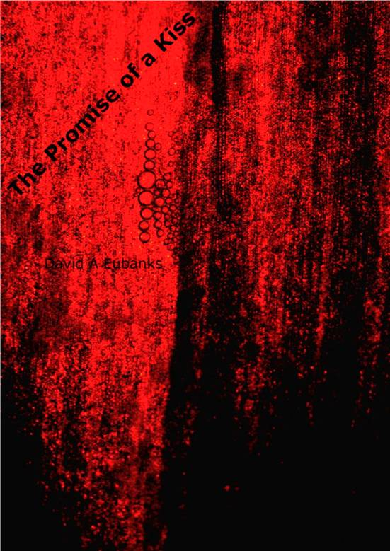

The Promise of a Kiss
e2.1
David A. Eubanks
I hated Gifta the first time I saw her. She was ten years old and cute as a baby snake.
I was ill at the sight of her expensive yellow jumpsuit that surely cost more than our rent, the matching wrap-around mask that covered her face down to her top lip, the froth of red hair bunched on top: custom genetics for sure. The shoes, the gloves, everything exactly the same shade of yellow. Everything dripped money. A little princess, banker’s daughter in a in a city owned by them.
I had hardly any clothes that could be said to match except for two oversized shoes. At twelve years old I was skinny, but in actuality a fat boy living in a ravenous body. I was hungry every moment of every day. I fought my siblings for scraps, lied, and stole from my own mother. I justified it all without question. There’s no higher morality than hunger.
At least I wasn’t a lid-kid anymore. Gifta’s mask was a very expensive model, but it was uncomfortable to wear anything strapped around your face all day. I wondered if she could even use the power of all that camera and virtual reality technology that her parents had bought. She probably just used it for school and entertainment. No doubt the sniffers on the mask were hard at work watching for pathogen signatures, with all the potential germ-bags milling about.
I was proud that two weeks earlier I’d had my eyes taken out, and didn’t need a mask anymore. With my optical orbs I could do all the cool tricks that were possible with cameras and electronics piping straight to my optic nerves. I could see in the dark and do a lizard—pointing the optics in different directions for almost 180 degrees of view. The optical orbs I got were hand-me-downs from my brother, who had died of the mySARS variant that swept through the city the year before. I was proud to wear them, but they were an old model. The irises were the hue of fresh rust, complimenting my mocha skin and black hair. Gifta’s hair was the color of my eyes, which seemed to steal even that small bit of specialness from me.
Students from all over the city had been assembled for a fair in the center plaza to see farm animals up close. Even more than the animals, the press of so many other human beings was an experience. It’s awkward to meet in real-real when most interactions are virtual for school children, who stay at home and participate through their mask or optical orbs. The physical proximity of strangers is unsettling, especially the weird feeling that you have to pay attention to someone just because they share space with you. That’s why they had occasional social events in real-real, despite the risk of infection, to get us used to the idea before we became adults.
A pair of dogs gave an exhibition in mating that drew attention. They certainly didn’t have any problem with real-real contact. When a third dog sniffed around trying to incite a canine ménage à trois, it caused great excitement. The video of the scene on the public record recorded my voice loudly comparing Gifta to the bitch in the middle of the dog orgy, noting accurately that its fur could be used as a replacement for hers when it fell out. Probably when she turned twenty.
I know she cried, because I saw her slip a finger under the edge of her mask to wipe away the moisture. It made me feel superior. So what if she had the best genes and electronics? I was proud of myself.
My brother had picked up a highly lethal mySARS variation when he was fifteen. The virus multiplied inside him unnoticed, doubling, doubling, doubling again until his own natural immune system killed him to suppress the virus. By the time his fever spiked, his lungs had already stopped working. “I don’t feel good” was the last thing he said before coughing up a few drops of blood and dying at dinner.
I broke a lock to get into our sickroom and held his hand until it turned cold and stiff. Mother screamed when she saw me there. I didn’t even have gloves on. I still had eyes then, and could cry. That was the last time I ever did.
A lot of children in our neighborhood died during that mySARS wave. My mother locked me in my room for thirty-four days to keep me safe. My ancient mask hardly functioned and itched my face, so school was all the virtual interaction I could tolerate. During the first week of confinement I thought I would go insane. What saved me was a discussion group on A New Discourse on Method, a book on philosophy and logic. Instead of seeking escape in a virtual world of cartoon sprites and mindless entertainment like my classmates, I began to find order in the rules of existence. It was terribly hard for me to read and understand, but I stuck with it. I created an ID on the forum and asked my stupid questions. After a while the questions weren’t as dumb. I began to have a reputation for finding irony and paradox and contradiction. For the first time, I saw the potential for life to make sense.
While Gifta got the best private education available in the city, I made do with the tax-supported system. But I had already noticed that ambition matters more than instruction, and had taken matters into my own hands by the time I met her. I taught myself calculus so I could learn classical physics and know how things worked. The rules of math and motion were sensible to me, even beautiful. I began to spend more time scaffolding my mind with theory and less on official school work, but after Farm Day in the city I kept an orb out for news on Gifta. It was like touching a sore.
When Gifta got her own new optics at thirteen, her parents threw a First Look party for her. It would reveal her new orbs and her unmasked face in society, the first step to becoming an adult. I wasn’t invited, of course, but I found some video one of her friends uploaded.
Gifta looks at us through a screen door. Shadow covers most of her face, but a slash of sunlight penetrates the dark grid of the wire to illuminate the curves of her lips. The stark contrast accents her smile, wide and perfect, a grin for trusted friends. She pushes open the door, and steps into the full glare of the sun, dressed in yellow again, but a knee-length dress this time, with polished rounded shoes that looked like the shells of beetles. But it is her face that draws attention.
Her hair has grown into tresses that wind and pile into an elegant spire. Her pale exposed face invites a search for freckles, in vain. Her nose is pert, between cute and classic, but not yet fully developed. She shows the promise of beauty, but it’s emerging here and there unevenly. Her ears look too large at this age, but it’s her eyes that quickly become the center of attention. She’s chosen brilliant green June-bug irises inside sparkling whites, but it’s not the new optical orbs that draw one’s gaze. Her right eye is set lower than the left, and sunk deeper under her brow. Closer inspection shows that they have shaved the bone on one side and filled it on the other to try to repair the biological defect, but the slant is impossible to ignore.
It’s not clear who’s recording the video, but instant commentary scrolls up one side of the frame. “0xGD! Look at her eyes!” “Damn the Dawkins, she’s crooked!” Emotional tags on the messages indicate #awe, #hilarity, and #shock.
“Hi everyone!” Gifta says, giving a half wave.
Voices reply in ragged unison, but the real conversation is happening point-to-point. “Is she infected?” someone wants to know. “Mut8r! Mut8r!,” someone else offers. These pampered teens are not kind to flaws in one of their own.
A robot maid bustles by with a tray of glasses with brown liquid sloshing.
“What do you think of my orbs?” Gifta wants to know, looking straight at us from a few feet away.
“Great color, Gift. The green really looks good with your hair,” says the owner of the orbs doing the recording. It’s a female voice.
Gifta does a little twirl that makes her dress spin out.
“What do you think?” she asks, turning to the left, speaking to someone out of frame.
“Lovely,” comes the reply, but the laugh at the end isn’t kind. “Just vorking lovely.”
Despite all the money spent on it, some combination of genetics had short-circuited, or mutated in situ. Or some gene jocky vorked up. I laughed when I saw the defect, froze the video, and tried to make sense of it. Then I laughed harder when I saw the conversation. It wasn’t just me—she really had turned out warped. It was too good to be true.
I spent an evening learning how to manipulate images, and created a side-by-side comparison. On the left was an adjusted version of Gifta’s face, perfectly proportional and beautiful. On the right was her real face. I wrote a note on it: “This is what you would have looked like if you weren’t a freak” and sent it to her, copying it widely to friends and classmates.
I began to feel a tangible grasp of fate, that the Newtonian scales could be tilted out of balance, that my poor beginnings didn’t have to define me. And luck played a role, granting me a wonderful boon.
Whereas Gifta had come out of the oven half-baked, my own “whatever you got” genes had shown the hardiness of survivorship at the bottom. Whereas she, rich and pampered, was a warped little thing, I was becoming a handsome man. I got my grandfather’s strong jaw, wavy luxurious hair from my mother, and perfectly balanced features that were accentuated by impeccable skin. My teeth were straight and healthy, and when my real voice emerged from its cradle, it was deep and commanding. By the time I turned twenty I was turning heads.
At about that age, one has to make a hard decision. It’s then that the body is deemed mature enough to be augmented with an upgraded active immune system. This includes a complete spleen replacement, some glands swapped out or modified, and implants in one’s bone marrow. From this platform, new viruses can be detected and uploaded, and new pathogen signatures can be downloaded and put in place before a real physical threat arrives.
There are several bio-companies that make this oozware, but they are in cutthroat competition with one another, and have safeguards against mixing different brands in the same body. Because of the investment in money and flesh, once you choose a bio-brand, you’re locked in for life. Later on when you need synthetic blood or a new major organ, you can’t go shopping around between producers. Everything has to match the immune system you bought when you were twenty.
The best brand was TaxoGen. Their products kept people alive, despite the swirling madness of human-created viruses that changed constantly. Their software was the best, the organic synthesizers second to none, and they always seemed to have a jump on the next threat before it appeared. There were whispers that the reason for this was that a shadowy branch of TaxoGen was producing tactical pathogens to kill off the competition. Maybe their own marketing department spread that rumor, because everybody bought TaxoGen if they could afford it.
Of course, I couldn’t afford it. I was doing okay, working with my hands to fix mechanical and electrical systems. My body was lean from the activity, and I was fit. My mind was constantly engaged in solving technical problems. But I wasn’t making much money. Nor could my parents afford to help me out much.
It burned me up inside, stoking the hatred I’d nursed for two decades, the knowledge that despite the clawing progress I was making, this decision would mark my low origins for life.
At the bottom of everyone’s list for oozware was WelScan. It was the cheapest for a reason. Everything is second rate, and the service terrible. But when I added up the cost of ownership, including data transport fees, licensing, annual inspection, upgrade path, and 24/7 support, I just couldn’t get past WelScan’s price point. If I upgraded to FrisamoBio, I’d have to go back to being hungry all the time. The fat boy in me at twelve had turned into a lean young man’s body, but I never lost the appetite.
So WelScan it was. I retained a fantasy that someday, when I got rich, I’d do a complete swap out for a platinum TaxoGen contract. Everything top-shelf. That’s the lie I told myself to keep the injustice from burning out my mind.
At twenty-two I found a better-paying job fixing elevators and their support systems. I was good at it, and I studied at night to learn engineering. The job took me all over the city, and it was in one of the tall buildings uptown that fate’s fling with me came to full term.
When Gifta stepped into the otherwise-empty elevator with me, I knew her even without the heads-up display in my orbs telling me. She had taken to wearing retro glasses as an accessory—those primitive masks that relied on dumb optics and hooked around your ears to rest on your nose. It was an ineffective attempt to hide her asymmetry, and if anything, accentuated it by giving the tilt of her orb sockets a frame for comparison. She limped when she stepped aboard, and I figured that it hadn’t been long since they had upgraded her immune system. Carving into the bones leaves you hurting for a while. She had gotten TaxoGen for sure, silver grade at least.
At twenty years old, she had become a fine-looking young woman. Like most children of the wealthy, she ate more than was good for her, but her pale skin and red hair practically glowed with health. She was dressed for business this time, gray and white and black, top to bottom.
Our optics met straight on, and she lingered. Of course she did. Practically every woman I met took her time soaking up my angles. I gave my quirky smile and profiled a few degrees to show off. I was delighted by the meeting, and it occurred to me to toy with her.
“I know you,” I said.
She licked her pretty lips and looked in another direction. The elevator whirred, and I ignored the diagnostics I was supposed to be watching.
“I sent you a picture after your First Look party,” I tried. “Do you remember?”
Gifta stared at her expensive shoes and tried to figure out what to do with her hands.
I sighed loudly and shook my head, pretending.
“I was a vorking jerk to you. I know there’s no way I could make it right, but I really am sorry for that stupid prank. My brother died, and I just…went to a dark place for a while.”
I wasn’t trying to be a virtuoso, rather banging on emotional keys to see if I could get a tune out of her.
“Now look at us,” I said. “I fix elevators, and your dad owns the building.”
She still wouldn’t look at me. She sagged against the wall, favoring a leg.
“Just get your new oozware?” I asked.
That got a response. A curt nod. Her gaze sallied out to meet mine before quickly sliding away. She seemed vulnerable, hurt even.
I actually got down on my knees and took one of her gloved hands between mine. If I had touched her bare skin, they would have charged me with an expensive adjustment at the very least. But a glove is just a glove. Her hand was limp inside it.
“I know I must have hurt you, Gifta. All I can do is ask your forgiveness.” The fake sincerity was like honey.
It won me a fractional smile.
She got off the elevator without speaking to me, leaving only the smoky scent of her perfume as a goodbye.
I sent her a message the next day but didn’t really expect a response. Nor did I get one. It was with some satisfaction that I realized I really must have hurt her with the minor humiliations I had inflicted on her all those years ago. It was another sign that full bellies and fancy clothes just served to conceal the weakness of spirit of the monied few.
I decided to pursue her.
This little side project with Gifta added spice to my life. I worked hard at my job, seeking out the most difficult problems to solve. I studied all the time. I learned how to think about systems from different angles. A circuit could be a graph or a matrix, a set of complex variables or differential equations or a Laplace transform. Sometimes a problem was hard to solve from one point of view but easy from another. It became a game to me to find the trick—the most elegant solution. It drove my boss mad that I would spend time trying to find a second way to fix some breakdown after it was already thoroughly repaired. But that was how I pressed my analytical skills to higher standards.
During this time I sent little notes that might find their way into Gifta’s social circle, but nothing personal. Just to remind her that I existed. These were like pebbles dropped into a pond to watch the ripples. In this way I found out two important things to know if I was ever to completely crush her spirit.
I discovered that she had an active virtual social life. And I found out she had a personal PDA. These computer personalities were so expensive to operate that I couldn’t believe at first that anyone, even a rich banker, would throw away a fortune every month just so his daughter could have an artificial intelligence to…to what? Order her breakfast? Help shop for shoes? If I had one looking over my shoulder when I worked, I could solve a lot of problems more quickly. But Gifta?
Then I realized my error. I still thought of her as a child. Her performance in the elevator had done nothing to dissuade me of the impression. But she surely had become an adult, or what passes for an adult in her rarified circles, where money and servants and PDAs solved all the hard problems in life. This was bias on my part, and it would cloud my mind. I resolved to not make the same mistake again.
Neither was I the same person. At twelve my hatred was the edge on a sword of reason, but it was a child’s weapon, unbalanced and unwieldy. The years had tempered my mind. Working through A New Discourse on Method had forged mental tools and weapons of precision and acuity:
Reason is fairly divided among men. Therefore all acts are equal.
The wealthy had no more power to act from within themselves than I did. I had this justification sealed in my marrow, more permanent than the WelSec fabricators that churned out lymphocytes. I hated Gifta because of the unquestioned assumption that her reason and her acts were accepted as superior to mine. It was a burning lie, an outrage.
My anger was no longer a child’s passion, but a logical deduction. Gifta was not a symbol or a scapegoat, but a traced life parallel to mine that demonstrated the lies that separated our fates. I bound my will to the hatred of that spilt truth. It was an unfairness so wretched that my blood seeped from the twisted logic of it, running down my chest from a vibrating needle late one night. The tattooed ink stained my skin in line of characters, each one bold, assembling to become
MY REASON. MY ACTS.
Yes, Gifta was a real person. By thought and deed I would resolve my hatred of the real lies she embodied. The happy accident of her twisted birth would be the key. I would bring her to the mirror and make her look, not at herself, but through herself. Into the dark despair of overwhelming unfairness I knew from birth. I would be elevated by the act. The symmetry was a tautological joy.
In my pursuit, I spent far too much money in arranging to be admitted to virtual events that Gifta might attend. I don’t really like virtual-real. The visuals stream straight to the optical orbs, of course, but I don’t have the gear to seem authentic in-world: the haptics and sensors and software are prohibitively expensive, and I also couldn’t afford to pay for a virtual wardrobe. The idea of spending my money on clothes that don’t really exist was too much to bear. So I looked like an off-the-shelf avatar that may as well have had DEMO written across it, and I felt stupid trying to chat up other avatars that cost more than I made in a year. They laughed at me. It was a disaster that left me poorer and angrier. But it succeeded in the end, because shortly after this fiasco, Gifta messaged me with marked-up images taken from the virtual outing. They were mocking in a way, but mostly silly. And there was a happy face drawn on the last one.
I waited a day and messaged her back.
“Dearest Gifta, your artwork was amusing. Did I really look that ridiculous?” Not a hint of a hook dangling yet, just the merest of flirts. It wouldn’t do to spook my prey.
This exchange turned into a casual banter that assumed a certain regularity and increasing familiarity. I found that my pulse jumped when my inbox chimed that she had written some new banal update about her life. It was not a romantic thrill that tickled my nerves. It was the anticipation of a stalking.
By then I was a connoisseur of romance. Women young and old who saw me gave me invitations that spanned a spectrum of lust. In this age of constant biological threat, any physical contact was dangerous. This had expanded in the public mind, especially the adolescent mind, so that a first kiss was something extraordinarily precious, almost mythical. I had kissed scores of women, and a lot more beyond kissing.
It’s difficult to conceal physical contact from the watching eyes of the public surveillance cameras and the video streaming from masks and optical orbs. But there are a few cracks here and there that one can slip into to be undisturbed. I made a science of it. Still, these liaisons were unsatisfying. After the novelty wore off, I began to lose interest in the simple matter of conquest, which was too easy, and always risky. There was nothing there to feed my mind. The ability to instigate powerful emotions was just another tool to be used rationally.
When the messages from Gifta became frequent, I cut off these side adventures altogether. The resulting hurt calls and messages littered my communications for a while, and then tailed off into mournful silence. It felt good to be able to focus.
One evening while I lay on my bed in my small apartment, Gifta sent me the address to a virtual woodland scene, and we met in the made-up world. I wore my basic avatar, and she appeared as a wood nymph with pointed ears and a flawless face, gauzy wings fluttering behind her. Her control was amazing, and it told me that she spent most of her time avoiding real-real.
By comparison, my own avatar control was a cartoonish jerky comedy. As before, I lacked the skill, equipment, and software to pull it off convincingly. But she didn’t draw attention to it. I managed to clumsily follow her around as she showed me her world.
I realized that this really was her world. Why live in a crooked real world, when perfect ones can be made to specification?
The scene was a peaceful forest at the first sign of spring. Thick trunks of a bygone age stood as pillars against a rolling landscape. There was no undergrowth except for bright green grass spotted with white mushroom caps. The trees receded far into the distance before forming a ragged horizon of brown and green.
“This way,” she said, leaping onto a path worn in the grass. She half ran, half flew, faster than I could keep up. I followed the path to find her at the edge of a troubled sea. White-headed rollers curled into tubes before shattering on a stony shore.
“This is your world,” I said, raising my voice over the crashing water.
“How did you know?” Her eyes lifted in surprise. There were no optical orbs here anymore than there were errant genes. The eyelids on her avatar were stained the color of crushed grass. The eyes themselves were black on white, too large, and piercing. But the twist of a smile softened her face.
“I make it all from nothing,” she said, holding out her arms to embrace this luxurious fantasy.
She made this? I suddenly doubted myself. I crushed the thought, and my hands reflexively went to my chest where my salvation was etched in my flesh. This physical act caused my avatar to perform unexpected gyrations, as if I’d gone mad.
“Are you all right?” she asked.
“I’ve never been all right,” I said. The thought slipped its restraints before I could snatch it back.
“Never? Ever?” her eyes grew round and huge. The sun behind her dripped into a fading stain on the sky, and light faded to monochrome gloom.
I had never meant to be honest with her, not for a fraction of a thought. But the truth lay there like a corpse awaiting dissection.
I terminated the connection. The sea and the nymph vanished, and I was greeted back to real-real by the sight of filthy walls and two beetles mating on a table. For just a moment I could see how someone could shun this profanity and live a whole life in the pleasure of pixels and fantasy.
Gifta messaged me some sympathetic bitshit, but I ignored it. I was in no state to be seductive or deceitful, and certainly not to be the recipient of pity.
I lost myself in circuit theory for a while, admiring the beauty of spanning trees and their delicate connection to matrix eigenvalues. I discovered a subtle but powerful transformation that I could not find in any reference. I wondered if I had proved a new theorem.
My confidence seeped back.
It was natural that being with Gifta, even virtually, would directly challenge my emotional state. I had been prepared to deal with superficial romance, but Gifta was unlike other females I had encountered. She was sophisticated. It had never occurred to me that I might be challenged by her mind. I had expected a straightforward romantic conquest--the game that had become so easy for me--which would allow me to break her heart and declare victory.
But the brief experience with Gifta in her world had shown me that my own defenses were inadequate. My private feelings were locked behind unassailable walls of resentment. There was no possibility she could make me forget the years of deprivation and loss. But I had arrogantly assumed that my reason would also be superior, that she would have acquired the learned disability of the very rich: their propensity to trivial pursuits and shallowness of soul.
Doubts crowded around like the afternoon vultures that searched for carrion in the streets.
Gifta has a mind with edges as sharp as my own. Could I have done what she did?
I began to realize that rationality is a fickle master. It twists and turns unexpectedly. This was supposed to be my strength, this radar for irony and contradiction. But I saw that it came with hidden barb. Being a logician seemed like being a snake charmer. One lapse in judgment or concentration could lead to a poisonous outcome.
Still, a decade of devotion to logic could not easily be undone. The image of myself as a purely emotional hate-driven man who abandoned reason was repugnant. There was no way but forward. And as I began to relax, toying with my graphs and equations, my confidence increased again.
I lifted my shirt and traced the words across my chest. They were still true, and with them the logical ground under my feet:
I think, therefore I hate.
The next day, I got a longer message from Gifta than before. She chattered on for several paragraphs about her friends and mundane events, as if nothing unusual had happened between us. But I read these ephemera more carefully now. It seemed that this could be constructed so as to veil intelligence that didn’t want to reveal itself.
I struggled, on the one hand to find firm evidence of deceit, and on the other arguing with myself that this was merely residual doubt from the night before.
The last part of her message became personal.
"I'm becoming attached to our conversations," she wrote. "Once upon a time you made it clear that you thought me hideous. I wonder if that’s still true. I will be riding the elevator again in two days. It would be better to be absent than unsure of your answer.”
The words and emotional tags on this last showed sophistication. Normal emotags like #happy and #interested are overused by most people. Gifta avoided those. In place she had included an emotag logic with a conditional if-then construction. I understood it immediately. This meta-message made the intent of the proposed rendezvous clear.
if (#disappointment) then (#peace #eventually)
BUT if (#betrayal) then (#heartbreak #unforgiven)
This was as clear as it could be, and it told plainly that I could achieve my aim. I doubt that she had any idea how thorough my betrayal would be. To allow her to believe I loved her, perhaps to kiss, and then to unmask my utter contempt for her and season the insult with disgust at her warped appearance.
But her recipe did not reassure me. What sort of vulnerable woman would write her fears out like a computer program? Shouldn’t she be hoping against hope, bouncing between joy and fear? That’s what I had come to expect. Anyone as intelligent as I suspected Gifta to be would know that honesty in romance is the same as weakness, and that predicting heartbreak makes it inevitable.
My mind focused on the prospect. I had the feeling of a grand conclusion in logic, where one draws a line under the rows of premises and sums the significance. For her to propose to meet in real-real was of utmost significance.
I was ironically strengthened now by the knowledge that I had doubts, and could therefore prepare against them. In any storybook version of our anticipated meeting, I would be swayed by her innocence or pure spirit or some such bitshit and miraculously transmute my hate into love. As if such an obscene philosopher’s stone could exist.
The encounter in her virtual world instructed me not to be arrogant, and her most recent message almost looked like a trap. I needed a reaffirmation of my purpose to shore up my defenses.
So I wrote myself a promise, scratching it into a rusted iron plate with a chisel. I made a solemn swear that I would not be swayed from my intent, and that by all means necessary I would hurt Gifta as much as I had ever been, adding up the sum of all my pains into one deliverable, one parcel of agonizing regret to be delivered by yours truly. This is as fate should decree, if fate were up to its obligations. But fate is a lazy bastard, and so it would be my reason and my act as the agent of fortune.
It took some time to inscribe the proper words, but I traced them until the grooves ran deep, and I had memorized every curve and nuance of the oath. I was ready to meet Gifta in the flesh.
“I look forward to our meeting,” I wrote to her. I added a #smile emotag to warm the words.
On the appointed day, I rode up and down the elevator, waiting. Gifta arrived wearing a spring dress despite the coolness of February. I saw her every time the elevator doors rolled open, admitted serious bankers and lawyers, and closed. On the third trip there was no one else. Just Gifta in a bright red dress with big yellow flowers. She had a wide red ribbon in her hair. All that was missing was a basket for grandmother.
She stepped on board without hesitation, and the doors slid shut. We ascended, and I turned on my best smile.
I had administrative control of the elevator, and I marked it as being out of service. I disabled the cameras and other sensors that might betray us.
“Are we safe?” she asked, not quite looking at me.
“I turned everything off,” I said.
Gifta unwound the ribbon from her hair, shaking the red curls of her hair loose around her face. It startled me when she stepped forward and touched my face with her soft gloves. She tied the ribbon around my head as blindfold. That could only mean one thing—she wanted to do something that I couldn’t record visually through my orbs. The anticipation made my veins flutter with sudden warmth, but my heart remained resolutely cold.
She sent me an invitation to join her again in the virtual wooded glade. This was disappointing, but I met her there anyway, the visuals streaming straight to my optical orbs while we rode the elevator in real-real.
Her virtual world had turned from spring to fall, and I wondered about the meaning of it. We walked hand-in-hand between huge white trees and their drifting orange leaves. She took my hand in real-real too. Hers was shaking. I calculated a gentle squeeze to reassure her.
The sound of the trees swaying in a puff of wind competed with the crunch of dried leaves underfoot as we made our way along the familiar path. We walked in silence, crunching along until the sky’s reflection on the sea ahead opened up into a vista of the surging water. We stopped at the edge, and she looked straight at me with her oversized nymph eyes.
“Do you like my imagination?” she asked.
“Lovely,” I said.
“Do you know why I tied my ribbon around your eyes?” she asked.
“Tell me,” I said, attempting to smile in both worlds simultaneously.
“I want you to have my first kiss,” she said, and laid a hand on my chest in real-real. My heart was pounding under her palm. I turned off the virtual scene of salt and sea so I wouldn’t be distracted from the moment of my triumph. I felt her lift herself onto tiptoes, leaning on me, clothes brushing softly. I couldn’t see anything but a blur of red.
“Wait,” I said. There was a hesitation in my mind. A resurrected corpse of a doubt that had been damned to the blackest plane of Dawkins’ hell. Her imagination? And the first time we were there, she said she makes this world, present tense.
She stopped, shifting her weight to the floor.
“It’s okay,” she said. “I know you don’t really like me.”
“That was a long time ago,” I said.
“No, now. You despise me.”
I was stunned.
“You’re surprised?” she asked.
“Why do you…?” I temporized. Indecision gnawed at my guts. Was she testing me?
“If you watch a person long enough…well, you get to know them better. Maybe even better than they know themselves.” Her voice was sweet, but did not hide her intelligence.
“You watch me?”
“Ana does. And Ana is part of me.”
“Ana?” I felt as if understood nothing about her.
“Ana is my artificial person. My PDA, if you want to be vulgar. She thinks and I think, and somewhere in the middle is Gifta.”
The small muscles in my face tried to blink, but the lids were long gone. I finally made the connection to crack open the understanding that was eluding me.
“The world with the trees and sea. You imagine it? In real time?” I asked.
“Yes. I make it up as we go along. Every tree. Every leaf. The foam on the waves, and every pebble it falls on. It’s all a whim.”
“How is that possible?” The amount of computational power needed to turn visual imagination instantly into digital expression must be vast. Not to mention the technical ability to even extract such things from a living brain.
“I told you. Ana and I are connected. My brain has…interfaces. You might say that I’m her peripheral device. But the reverse is true too. We are separate…but we are also one. You can’t really understand. Not yet. But you could. It’s not too late.”
The walls of the elevator felt very close. Why couldn’t I get enough oxygen?
“When?” was all the air I could get out of my chest.
“When did we begin to meld? It began when I was nine.”
I had no idea this was even possible. Her mind was not even human anymore. In spite of myself, I was awed at the implications.
“How many are there like you?” I managed to ask.
“There are hundreds of us world-wide. We don’t advertise it. Some people are envious. Some hate us and call us names.”
I felt the back of her head. She twitched when I touched her hair, but then stood still for it.
“Inside here? You have a head full of wires?”
She laughed.
“No, not quite like that. The implants are tiny, and Ana’s nous is in a computer somewhere. But let’s talk about you.”
I hesitated. This meeting was nothing like I’d imagined.
“If you don’t think I’m sincere,” I said finally, “why are you here?”
“Not everything makes sense, mister engineer. There are con-tra-dic-tions.” She drew the word out, tapping my chest each syllable. “I come from money and you don’t. You’re beautiful and I’m…not beautiful. You’re mean and unfair and hateful, and I’m an optimist.”
The words twisted inside me. It was time to leave. But I was frozen with curiosity and even awe.
“Gifta. Why did you meet me here?”
“Because you’re also brilliant and driven. I came here to kiss you. Then you won’t hate me anymore.”
I felt trapped. My intentions had been transparent to her. She came anyway. To try to help me?
I fought that conclusion. Everything I’d known for over two decades was in question. My certainty, the logic, the philosophical architecture that defined my comings and goings, all of it seemed now like a convenient illusion. A child’s tale with tortured logic, where Red Riding Hood eats the wolf.
“I don’t need you to fix me,” I said, but my voice shook.
“Oh,” she said. It was the smallest sound, like a raindrop’s end.
She was very still, and our breathing gradually synchronized in the quiet.
My anger needed purchase. I wanted some object to hate, to return familiar fire to my veins, but Gifta had become a smoothness that I could not find a purchase on. I wanted to gnaw and bite at the unfairness, at the hunger, and the death, and the second-rate everything, but here in the elevator I wasn’t hungry, and no one had died. And the only unfairness seemed to be my own.
“I don’t think I can change,” I said. More wretched honesty.
“Oh,” she said again. A second drop of rain.
I felt defeated. Perhaps I could joyfully pretend to change—into what I wasn’t sure—and manage to break her heart that way. But that seemed a tepid goal, trivial and mean. And my doubts ran much deeper than that.
I struggled. I knew that when I was alone again I would rail at myself for having missed this opportunity to strike back at the…unfairness. There it was again. A galling recognition that here inside this elevator car, I was the source of unfairness. But the picture would clarify when I was away from her, wouldn’t it? When the closeness of her body and her scent and those soft sad syllables she dropped. Wouldn’t everything go back to normal then?
“I need to go,” I said, and ordered the car to descend to the ground floor.
“Without my kiss?” she asked.
I stopped the car just as suddenly, and she sagged against me when it jerked to a halt.
“Gifta, I…” the words wandered around and got lost. I couldn’t think. “I need to be alone,” I said. I was desperate to get away from her, to return to my doubt-free life.
“Anyway,” I said, “the kiss won’t work. Save it for somebody special. If there’s a chance for me to stop…” I left the rest unsaid. If there was a hope of redemption that did not involve an even deeper hate, a lip’s caress would not make a difference.
“I know you. You’re just afraid of making a promise,” she said.
“Afraid? You don’t know me. It’s nothing.” It was a shameful lie. I realized suddenly that honesty with oneself ought to be a prerequisite to reason. I was very good at finding contradictions in others. How was it that I had never turned that critical gaze inward?
“Why do you care so much, anyway?” I asked.
She laughed. I felt her breath through my shirt.
“That’s what Ana keeps asking me,” she said. “I told you. I know you. Your mind is extraordinary. I’ve seen your writing, your reasoning, your actions.”
Those very words, written in my skin, still tingled from her laugh. My thoughts stumbled over each other.
“You think that by looking at my public record? And those few words we’ve exchanged? You really understand me?”
She laid her head on my shoulder and hummed a simple tune. I found that I had wrapped my arms around her.
“Well,” she said, “it’s like magic. Ana has a special thing called a Theory of Mind Catalog. She calls it a TOMcat for short. Mostly she complains about it. But when she focuses it on a person, it gathers up all the information it can find. Then it sets to work trying to predict what that person will do. It even predicts the past and checks to see if it got the right answer. When it’s done enough figuring, it’s like having a deep understanding. Like knowing a close friend. People can’t really be predicted, but they can be understood.”
“You’ll never know that it’s like to be me!” I controlled my voice, but it wanted to become a shout. The warmth of familiar anger kindled.
“No.” She shushed me with a gentle rush of air. “I didn’t mean that. Only that I can understand enough to have sympathy. You’re very talented and driven. Imagine if that were used for something creative and wonderful.”
“Like the worlds you imagine?”
“You would be better than me. Much better.”
Gifta’s words quenched the anger as quickly as it had sparked. Here she was admitting that even with her advantages of birth and wealth I was in some way superior. And maybe in some ways I was. But in others? No. She could have sympathy where I could not. The promise I had carved in iron seemed childish now. Perhaps I had been made a fool by the simplest logic mistake of all.
I think, therefore I hate.
That was my grounding. But did I have it wrong? What if it was the converse that was actually true: I hate, therefore I think. And rational thought was just clothing for the raw pain inside. If I had reason to hate Gifta, did not all the lastleggers begging for scraps of food at the city wall have cause to hate me? Should not old people resent young people? The consequence of extending this logic would be a circle of inequalities so that everyone hated everyone else. Madness.
I did not let this glimmer of revelation show. I wasn’t even fully convinced yet that it was true. It bore more consideration.
“If you know me so well,” I said, “predict what I’ll do next.”
She squirmed in my arms, and I felt her chin press into my breast.
“You’ll kiss me. And then you’ll stop being angry. And then with my help you’re going to get a much better job. The rest is up to you.”
I knew it was impossible. In order to stop hating I would have to forget. How could I forget? I wanted to leave. It seemed that there was only one way to do that without appearing to retreat.
“Okay,” I said. “You’ve worn me out. You can have your kiss.”
“Oh,” she said, releasing the third drop.
I listened to her breath quicken.
“It’s a promise,” Gifta said.
“I know. I promise not to hate you anymore after this.” And damned-be-Dawkins if I didn’t mean it. I was sure that feeling would fade when the world got back to normal. But at that moment I felt a disquieting sense of peace.
I felt her trembling when she raised herself onto her toes, leaning on me. She slipped her hands around the back of my head. The warmth of her closeness made me lightheaded. I left the decision to her. Her lips brushed the corner of my mouth, soft as sunshine, and pressed against mine. Two quick breaths fluttered on my cheek. It was a short simple kiss, and the most memorable of my life.
I held her lightly in my arms, but she soon squirmed out and removed the obstructing ribbon from my face. She grinned, showing all her pretty teeth.
“You see?” she said. “You made a—” the words stuck. She clutched at her throat, and gasped for breath in a hiss. Then she started choking for real.
The rest is a blur of panic, sirens, and dire misfortune.
It was not enough for TaxoGen and FrisantoBio and WelScan and the rest of the oozware companies to rule out peaceful coexistence in a single body. It wasn’t even enough, if you believe the rumors, to produce pathogens that they could shield their customers against but that would be a threat to the wearers of other systems. No, they had to further escalate the war and trigger lethal immune responses by signatures in bodily fluids: to set bio-house against bio-house. They began to make us poisonous to each other.
You can choose what to believe, of course. Maybe it was all an accident, what happened to Gifta. But if so, it was the first of many such accidents, and no one seemed to be able to fix the problem. The irony in Gifta’s case is that it was the pricy TaxoGen oozware that was triggered into a self-destructive passion by a cheap WelScan signature. It should have been me. Who ever heard of WelScan competing with TaxoGen and winning? That was soon met with a response, and it was WelScan customers who became victims of traces put in TaxoGen excretions.
In the aftermath it was only Ana, or Anastasia*893 as she is called by other artificials, who saved me from exile. She had watched and recorded every word and deed, and after all the analysis no one could find me at fault. This would not normally stop a rich bastard from taking out cathartic revenge, but they had sympathy. Damn them to Dawkins’ hell. They had mercy, leaving me unable to resurrect the hate in me that Gifta had designed to exorcise with her kiss.
That red-headed young woman with the turned face and beautiful soul very nearly died. Ultimately they had to replace her liver and heart and kidneys and completely overhaul her immune system. That was terrible to endure, but the worst was that her skin literally fell off. The TaxoGen replacement is as good as it gets, but the graft is nothing like the luxurious smoothness Gifta was born with. She looks like a burn victim, and can never be free from the pain of it. Her hair really did fall out. At age twenty, just as I predicted when I was a malevolent twelve-year old.
For a long time I dry-wept, straining at my lost ducts to produce tears, until my very bones ached from the pent-up anguish. I took the chisel and scarred the promise I had etched in iron until it was a mess of random lines. I no longer remove my shirt with the lights on for the shame of the words written across my chest.
I have made good on my promise to Gifta at least. How can I weigh the unfairness of my own history with hers? Sometimes reason and action only serve to hide us from the truth: we have little control over ourselves. Perhaps this is why men created gods, so they could assign a final blame and manage to live in peace with one another.
They won’t let me see her, of course, but I talk to Ana through secret channels she has devised. I think in the coldness of Ana’s electronic whirls, she also found a measure of sympathy for me. When I wanted to numb my hurt in the sweet forgetfulness of street drugs, Ana talked me out of the idea. It would have made me forget not just for the moment. It would have made me lose the very memory of Gifta. Ana saved me from this amputation by letting me howl into her line inputs. She listened and listened. And eventually she began to speak wisdom, repeating as one does to a child.
Through Ana I can sometimes catch a glimpse of Gifta’s shared mind. The swelling in her brain was controlled, and she shows signs of cognition. She’s terrified and alone, her future a bleak despair that she has yet to fully comprehend. But eventually she will begin to think. And then she will start to resent. And after resentment comes all-consuming hate.
And then I will be there to help her.
Afterword
This short story is set in the world of Life Artificial, some years after the events of that novel. The protagonist is intentionally left nameless in contrast to Gifta. In German ‘Gift’ means ‘poison.’
If you want to learn more about masks, and PDAs, TOMcats, emotags, and life in the Queen City after the Waves of human-made viruses, you can read the novel at lifeartificial.com, which is written from the point of view of an artificial intelligence struggling for survival. There is also a glossary of terms there.
Copyright

The Promise of a Kiss by David A Eubanks
is licensed under a Creative
Commons Attribution-NonCommercial-ShareAlike 3.0 Unported License.
Based on a work at lifeartificial.com.